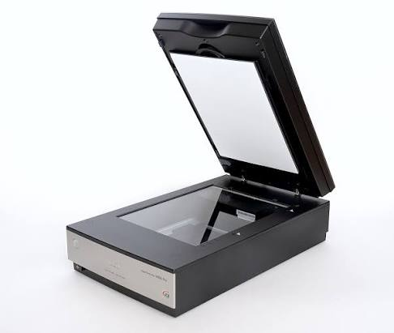
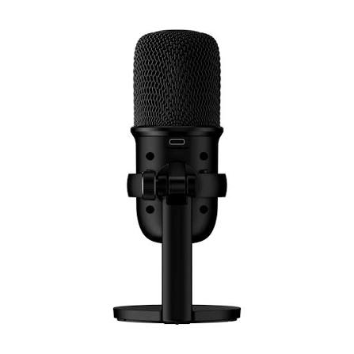
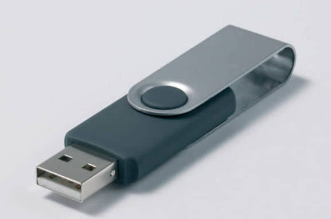
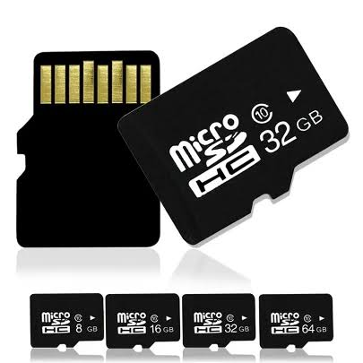

Komponen Perangkat Input
Perangkat yang digunakan untuk memasukkan data atau perintah ke dalam komputer.



Scanner
Perangkat input untuk memindai dokumen atau gambar menjadi data digital.
Selengkapnya
Microphone
Perangkat input untuk memasukkan atau merekam suara ke komputer.
SelengkapnyaKomponen Perangkat Proses
Komponen yang berperan dalam pemrosesan dan pengolahan data pada komputer.


Komponen Media Penyimpanan
Media penyimpanan digunakan untuk menyimpan data dan informasi pada komputer maupun perangkat digital lainnya.
Media Penyimpanan Internal
Media penyimpanan yang digunakan di dalam sistem komputer untuk menyimpan data, aplikasi, dan sistem operasi.
Media Penyimpanan Eksternal
Media penyimpanan portabel yang dapat digunakan untuk menyimpan dan memindahkan data antarperangkat.
Media Penyimpanan Internal
Media penyimpanan yang digunakan di dalam sistem komputer untuk menyimpan data secara tetap.


Media Penyimpanan Eksternal
Media penyimpanan yang bersifat portabel dan dapat digunakan untuk menyimpan serta memindahkan data antarperangkat.

Flashdisk
Media penyimpanan portabel yang dapat dihubungkan melalui port USB.
Selengkapnya
Memory Card
Media penyimpanan berukuran kecil yang digunakan pada berbagai perangkat digital.
SelengkapnyaKomponen Perangkat Output
Perangkat yang digunakan untuk menyajikan hasil pengolahan data komputer.


Komponen Perangkat Pendingin
Komponen yang membantu menjaga suhu sistem komputer agar tetap stabil.

Fan (Kipas Pendingin)
Komponen yang membantu mengeluarkan panas dari dalam sistem komputer.
SelengkapnyaKomponen Perangkat Catu Daya
Komponen yang menyediakan dan menyalurkan daya listrik kepada perangkat komputer.

PSU (Power Supply Unit)
Komponen yang menyediakan energi listrik bagi berbagai komponen komputer.
Selengkapnya